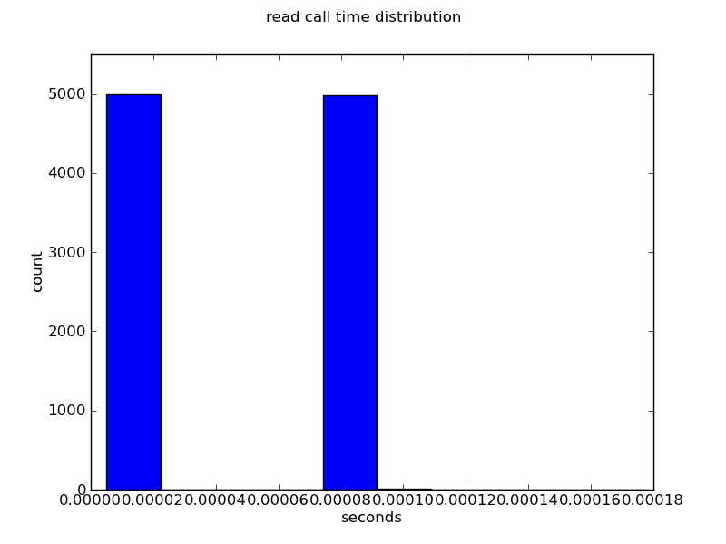

stracestats — Summarize and Visualize Data in strace Output
strace is an invaluable tool for figuring out what a Linux process is doing.
With its options for logging how much time is spent in each system call, it’s also an easy way to profile i/o-bound programs and components in distributed systems.
However, sometimes it can be a challenge getting the big picture from all the data, without losing details (such as you do with strace -c).
That’s what stracestats is for — it aggregates and reports statistics about the system calls in the output of an strace run.
Specifically, for each system call that appears it’ll report:
occurrences (number of times called, percentage of overall calls made)
time spent in the call (total time, percentage of system call time, percentage of wall time)
average call time and standard deviation
median call time
a 10-bin histogram of call times, from min to max
It can report separate statistics for each call with a different first argument (helpful for all those calls that take a file/socket descriptor), and it can make plots of the distribution of time spent in each call.
stracestats is written in python and requires only numpy and, if plotting is desired, matplotlib.
It’s available at:
stracestats requires the strace be made with both timestamps and time-in-call recorded, e.g.:
How to Run a Compatible Strace
1
$ strace -tt -T -o STRACE_OUTPUT_FILE ...
The -t and -ttt alternatives to -tt, for different timestamp formats, are also acceptable.
stracestats works with any combination of -f, -ff and -o, too (i.e. the output may have extra process id info prepended).
Usage is best demonstrated by example, which requires an example program.
Take this example, io.c.
It creates a connected pair of tcp sockets and pushes data through them.
To make things a little interesting, it alternately reads from /dev/zero and /dev/urandom; it writes to /dev/null.
The heart of the program is this loop:
$ stracestats strace.out
accept
num calls: 1 0% of syscalls
tot time: 0.000009 0% of syscall time, 0% of wall timeavg call time: 0.000009
+/-: 0.000000
med call time: 0.000009
min/hist/max: 0.000009 [0 0 0 0 0 1 0 0 0 0] 0.000009
bindnum calls: 1 0% of syscalls
tot time: 0.000009 0% of syscall time, 0% of wall timeavg call time: 0.000009
+/-: 0.000000
med call time: 0.000009
min/hist/max: 0.000009 [0 0 0 0 0 1 0 0 0 0] 0.000009
arch_prctl
num calls: 1 0% of syscalls
tot time: 0.000010 0% of syscall time, 0% of wall timeavg call time: 0.000010
+/-: 0.000000
med call time: 0.000010
min/hist/max: 0.000010 [0 0 0 0 1 0 0 0 0 0] 0.000010
munmap
num calls: 1 0% of syscalls
tot time: 0.000010 0% of syscall time, 0% of wall timeavg call time: 0.000010
+/-: 0.000000
med call time: 0.000010
min/hist/max: 0.000010 [0 0 0 0 1 0 0 0 0 0] 0.000010
fstat
num calls: 2 0% of syscalls
tot time: 0.000010 0% of syscall time, 0% of wall timeavg call time: 0.000005
+/-: 0.000000
med call time: 0.000005
min/hist/max: 0.000005 [0 0 0 0 0 2 0 0 0 0] 0.000005
listen
num calls: 1 0% of syscalls
tot time: 0.000010 0% of syscall time, 0% of wall timeavg call time: 0.000010
+/-: 0.000000
med call time: 0.000010
min/hist/max: 0.000010 [0 0 0 0 1 0 0 0 0 0] 0.000010
close
num calls: 2 0% of syscalls
tot time: 0.000011 0% of syscall time, 0% of wall timeavg call time: 0.000005
+/-: 0.000000
med call time: 0.000005
min/hist/max: 0.000005 [1 0 0 0 0 0 0 0 0 1] 0.000006
access
num calls: 1 0% of syscalls
tot time: 0.000017 0% of syscall time, 0% of wall timeavg call time: 0.000017
+/-: 0.000000
med call time: 0.000017
min/hist/max: 0.000017 [0 0 0 0 0 1 0 0 0 0] 0.000017
socket
num calls: 2 0% of syscalls
tot time: 0.000018 0% of syscall time, 0% of wall timeavg call time: 0.000009
+/-: 0.000001
med call time: 0.000009
min/hist/max: 0.000008 [1 0 0 0 0 0 0 0 0 1] 0.000010
mprotect
num calls: 3 0% of syscalls
tot time: 0.000023 0% of syscall time, 0% of wall timeavg call time: 0.000008
+/-: 0.000000
med call time: 0.000008
min/hist/max: 0.000007 [1 0 0 0 0 0 0 0 0 2] 0.000008
connect
num calls: 1 0% of syscalls
tot time: 0.000037 0% of syscall time, 0% of wall timeavg call time: 0.000037
+/-: 0.000000
med call time: 0.000037
min/hist/max: 0.000037 [0 0 0 0 1 0 0 0 0 0] 0.000037
brk
num calls: 3 0% of syscalls
tot time: 0.000044 0% of syscall time, 0% of wall timeavg call time: 0.000015
+/-: 0.000012
med call time: 0.000006
min/hist/max: 0.000006 [2 0 0 0 0 0 0 0 0 1] 0.000032
mmap
num calls: 7 0% of syscalls
tot time: 0.000163 0% of syscall time, 0% of wall timeavg call time: 0.000023
+/-: 0.000039
med call time: 0.000007
min/hist/max: 0.000006 [6 0 0 0 0 0 0 0 0 1] 0.000118
stat
num calls: 24 0% of syscalls
tot time: 0.000209 0% of syscall time, 0% of wall timeavg call time: 0.000009
+/-: 0.000003
med call time: 0.000008
min/hist/max: 0.000007 [19 1 3 0 0 0 0 0 0 1] 0.000022
open
num calls: 29 0% of syscalls
tot time: 0.000299 0% of syscall time, 0% of wall timeavg call time: 0.000010
+/-: 0.000006
med call time: 0.000009
min/hist/max: 0.000008 [27 1 0 0 0 0 0 0 0 1] 0.000044
execve
num calls: 1 0% of syscalls
tot time: 0.002719 0% of syscall time, 0% of wall timeavg call time: 0.002719
+/-: 0.000000
med call time: 0.002719
min/hist/max: 0.002719 [0 0 0 0 1 0 0 0 0 0] 0.002719
write
num calls: 10000 25% of syscalls
tot time: 0.065425 9% of syscall time, 4% of wall timeavg call time: 0.000007
+/-: 0.000001
med call time: 0.000007
min/hist/max: 0.000005 [9933 46 16 3 1 0 0 0 0 1] 0.000027
recvfrom
num calls: 10000 25% of syscalls
tot time: 0.098670 14% of syscall time, 6% of wall timeavg call time: 0.000010
+/-: 0.000002
med call time: 0.000010
min/hist/max: 0.000006 [9992 3 0 0 2 0 0 2 0 1] 0.000110
sendto
num calls: 10000 25% of syscalls
tot time: 0.101630 15% of syscall time, 6% of wall timeavg call time: 0.000010
+/-: 0.000001
med call time: 0.000010
min/hist/max: 0.000008 [9986 11 0 0 0 2 0 0 0 1] 0.000089
readnum calls: 10001 25% of syscalls
tot time: 0.431161 62% of syscall time, 25% of wall timeavg call time: 0.000043
+/-: 0.000037
med call time: 0.000017
min/hist/max: 0.000005 [5001 0 0 0 4982 10 5 1 0 2] 0.000178
This shows that read is the dominant system call, followed by sendto, recvfrom, etc.
Note that the last line in each entry is a textual histogram showing the distribution of times spent in the system call — the numbers within the brackets are the counts for each bin in an equally-spaced 10-bin range between the minimum and maximum times seen.
Plotting
If you have matplotlib installed, stracestats can plot the histograms displayed in the text above, just add --show-plots or --save-plots, and, optionally, --plot SYSTEM_CALL_NAME to limit (or expand) what’s plotted.
For example, to pop up a plot of the distribution in time spent in read:
Plotting Example
1
stracestats --show-plots --plot read strace.out

When plotted, the extreme bimodality of the read distribution is even more obvious.
The --plot option can take the special arguments ALL or TOPX where X is a number.
The latter case means only plot the X most relevant system calls.
If no --plot is given, only the top three are plotted.
Breaking Down by the System Call’s First Argument
Often a system call is used on many different resources — e.g. the system calls that take a file or socket descriptor as their first argument.
This is obviously what is creating the bimodality here — read is called both on /dev/null and /dev/urandom, with the latter PRNG being much more expensive.
To separate the statistics for the calls based upon their first argument, add --breakdown-by-arg:
$ stracestats --breakdown-by-arg strace.out
...
read(6
num calls: 5000 12% of syscalls
tot time: 0.032761 5% of syscall time, 2% of wall timeavg call time: 0.000007
+/-: 0.000001
med call time: 0.000007
min/hist/max: 0.000005 [2297 2674 12 10 3 3 0 0 0 1] 0.000017
write(8
num calls: 10000 25% of syscalls
tot time: 0.065425 9% of syscall time, 4% of wall timeavg call time: 0.000007
+/-: 0.000001
med call time: 0.000007
min/hist/max: 0.000005 [9933 46 16 3 1 0 0 0 0 1] 0.000027
recvfrom(5
num calls: 10000 25% of syscalls
tot time: 0.098670 14% of syscall time, 6% of wall timeavg call time: 0.000010
+/-: 0.000002
med call time: 0.000010
min/hist/max: 0.000006 [9992 3 0 0 2 0 0 2 0 1] 0.000110
sendto(4
num calls: 10000 25% of syscalls
tot time: 0.101630 15% of syscall time, 6% of wall timeavg call time: 0.000010
+/-: 0.000001
med call time: 0.000010
min/hist/max: 0.000008 [9986 11 0 0 0 2 0 0 0 1] 0.000089
read(7
num calls: 5000 12% of syscalls
tot time: 0.398393 57% of syscall time, 23% of wall timeavg call time: 0.000080
+/-: 0.000003
med call time: 0.000078
min/hist/max: 0.000077 [4977 9 5 4 2 1 0 0 0 2] 0.000178
(The output here is truncated for clarity.
The full output is available here.)
Now there are two separate entries for read(6 and read(7.
Inspection of the original strace output for the system calls that created the file descriptors, or an lsof while the process is running, will show exactly which file descriptors are which files, if there is any doubt.